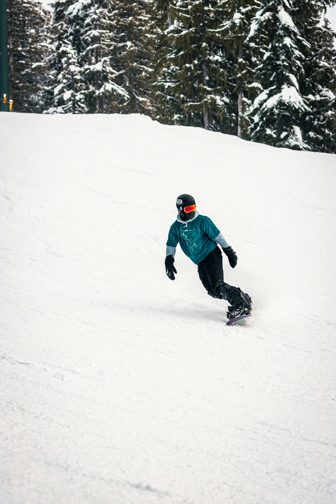
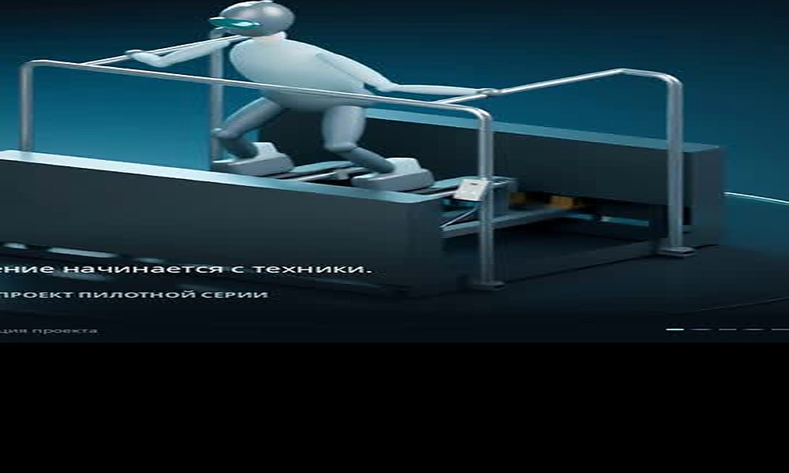
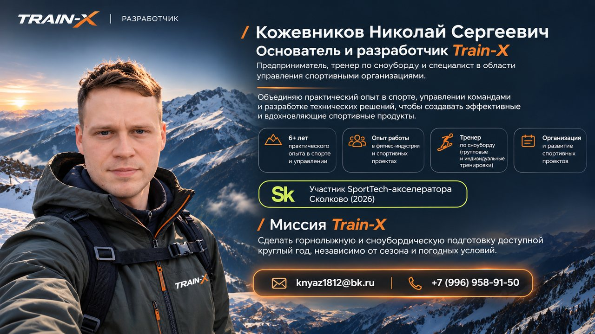

TRAIN-X
TRAIN-X
Иллюстрация спортивной среды
01 / ГОРНЫЕ ЛЫЖИ
Горные лыжи
Две отдельные рабочие платформы. Концепция предусматривает независимое движение опор для разработки упражнений с инструктором.
Train-X — единый тренажёр для горных лыж и сноуборда на стадии разработки. Создаём систему для имитации движений при катании и круглогодичных занятий в помещении.
Приглашаем заказчиков и инвесторов к созданию первого опытного образца.Сейчас: цифровая концепция. Физический образец ещё не изготовлен.
Рассмотрите одну конструкцию в лыжной и сноубордической конфигурациях. Вращайте модель, меняйте ракурс и наблюдайте за движением.
Вращайте модель мышью или пальцем. Выберите лыжи или сноуборд в панели управления.
Открыть 3D на весь экранДве отдельные рабочие платформы. Концепция предусматривает независимое движение опор для разработки упражнений с инструктором.

Единая сменная платформа для демонстрации боковых движений и наклона. Окончательные параметры определяются испытаниями.
Четыре направления, которые предстоит подтвердить на первом опытном образце.
Сменные комплекты для лыж и сноуборда позволяют исследовать два сценария катания на общей конструкции.
Концепция предназначена для помещений, где можно организовать занятия независимо от состояния склона.
В лыжной конфигурации предусмотрены раздельные рабочие платформы; в сноубордической — единая платформа. Механику и упражнения предстоит проверить.
Будущий партнёр может сформулировать требования к применению и согласовать критерии проверки опытного образца.
Это особенности цифровой концепции, а не доказанное превосходство над другими тренажёрами. Стоимость, нагрузка, безопасность и эффективность уточняются в ходе разработки.
Предлагаем совместно проверить коммерческий потенциал нового формата занятий — до решения о масштабировании.

Проверить спрос на специализированные занятия и дополнительную услугу для клиентов.
Разработать форматы подготовки к сезону и занятий вне склона.

Исследовать новый формат спортивной активности сотрудников и мероприятий.
Совместно с инструкторами разработать упражнения и оценить тренировочную пользу после испытаний.
Приглашаем заказчиков, инвесторов и производственные организации к обсуждению создания первого опытного образца.
Участие в формировании требований, согласование комплектации, изготовление и инженерная проверка пилотного образца, оценка формата занятий на площадке.
Запросить предложениеДо начала финансирования согласуем техническое задание, бюджет, сроки, этапы оплаты, критерии приёмки, права и ответственность сторон.
Цена и сроки — по результатам индивидуального согласования.
Обсуждаем потребности площадки и показываем цифровую модель.
Согласуем сценарий использования, комплектацию и критерии приёмки.
После расчётов согласуем бюджет, сроки и условия договора.
Создаём первый опытный образец и проводим инженерные проверки.
После необходимых проверок безопасности оцениваем применимость на площадке.
По результатам пилота обсуждаем дальнейшее сотрудничество.

Основатель и разработчик Train-X
Цель проекта — создать универсальную тренировочную систему для развития горнолыжного спорта и сноубординга вне зависимости от сезона.
Сейчас основная задача — переход от цифровой модели к опытному образцу, согласование требований с будущими заказчиками и инженерная проверка конструкции.
Связаться с разработчиком →Проект Train-X представлен в открытом интернете с интерактивной цифровой моделью.
Подготовлена цифровая концепция единой конструкции со сменными лыжным и сноубордическим комплектами.
Открыты к обсуждению первого опытного образца и производственного сотрудничества.
Сейчас предлагается сотрудничество по разработке и изготовлению первого опытного образца, а не продажа серийного изделия.
Подтверждённой цены пока нет. Бюджет и сроки определяются после согласования технического задания.
До занятий с человеком необходимы инженерные расчёты, проверки конструкции и согласование условий эксплуатации.
Фитнес-клубы, курорты, спортивные школы, корпоративные и спортивные центры, инвесторы и производственные организации. Условия обсуждаются индивидуально.
Да, свяжитесь с разработчиком. Краткую открытую информацию можно сохранить в PDF через печать браузера.
Подробная документация предоставляется по согласованию с разработчиком и на согласованных условиях конфиденциальности.
Кожевников Николай Сергеевич
Почта: train-x@bk.ru
Telegram: @knyaz1812
Телефон: +7 996 958-91-50
Для обсуждения пилота, инвестиций и производственного партнёрства.